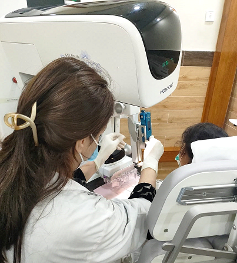

Advanced interventional procedures at NORI ensure precise and minimally invasive diagnostic and therapeutic options.
Stereotactic Biopsy
- NORI offered the latest biopsy of its kind for the first time in public sector Rawalpindi/Islamabad
- Stereotactic biopsy is used for sampling of suspicious non-palpable lesions identified on mammography or digital breast tomosynthesis which are not visible on ultrasound. Stereotactic biopsy is preferable to surgical excision biopsy and helps avoid surgery for benign lesions.

Ultrasound Guided Biopsy
Ultrasound guided FNAC and Trucut biopsies are being daily conducted in Department. These are performed by experienced doctors and assisted by skilled technologists.
- The Radiologists were trained by foreign consultants, resulting in the diagnostic procedures having the highest yield.
CT Guided Biopsies
We are performing CT Guided biopsies in NORI at subsidized rates.
- CT guided biopsies of liver, mediastinal, and lung lesions are performed in our department after careful assessment of the patient.
- The procedure indication is first established by the oncologist after consultation with the radiologist.
- The procedural details, potential complications, and diagnostic alternatives are explained to the patient.
different attibutes and advancement in services